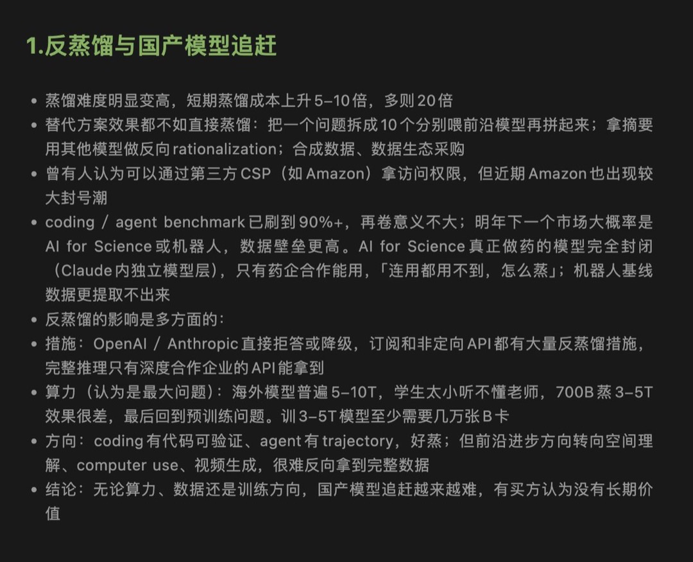
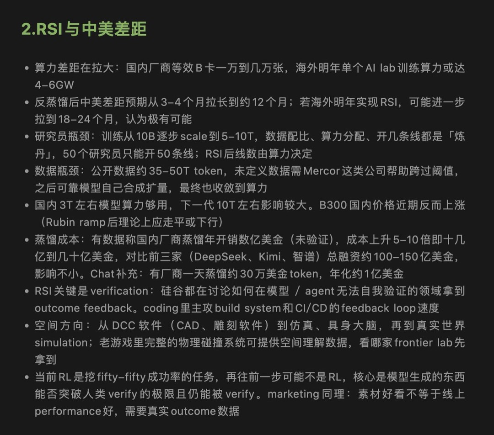
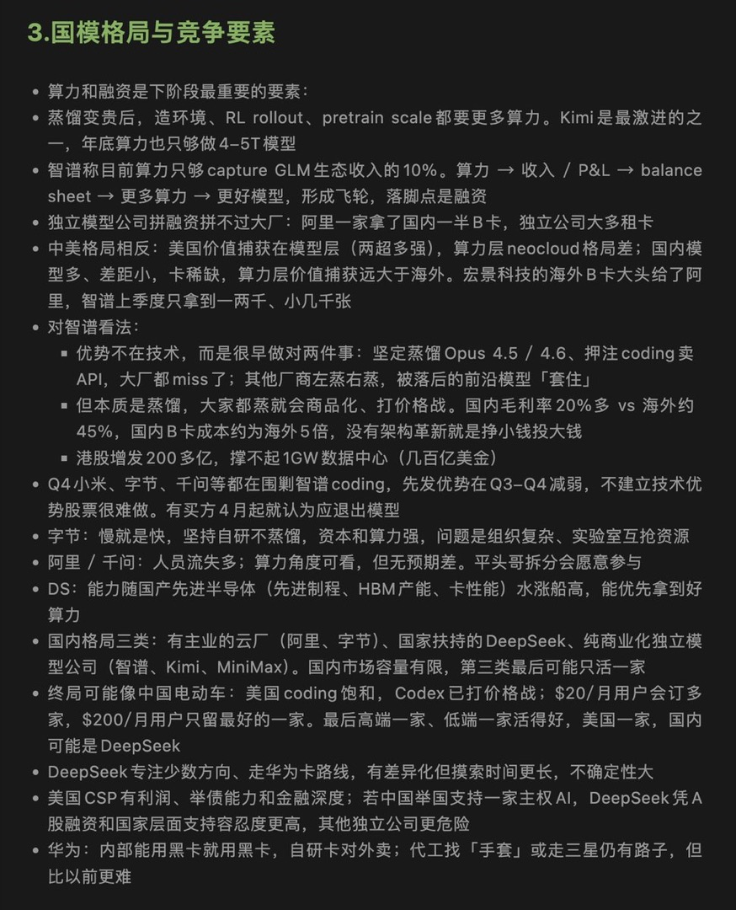
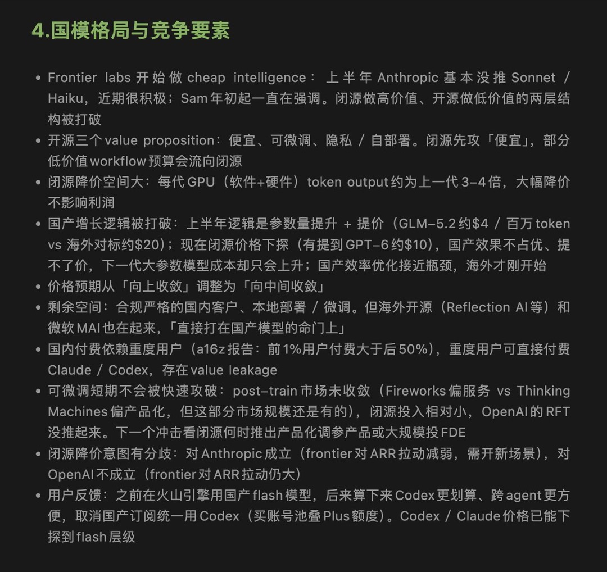
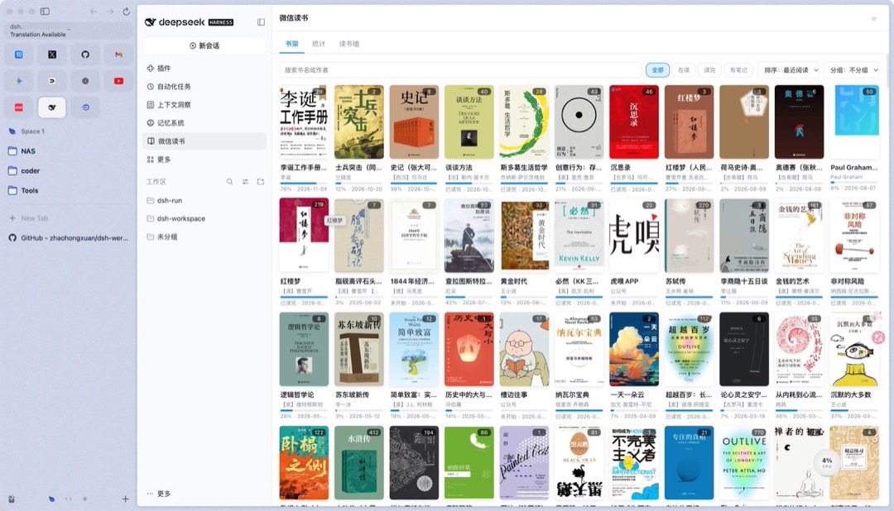
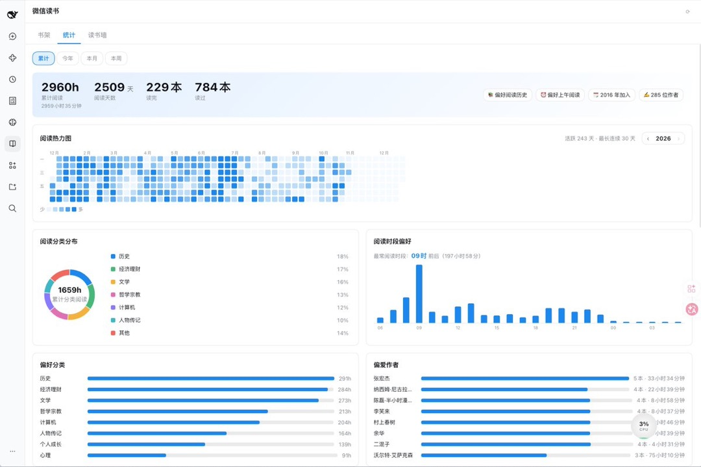
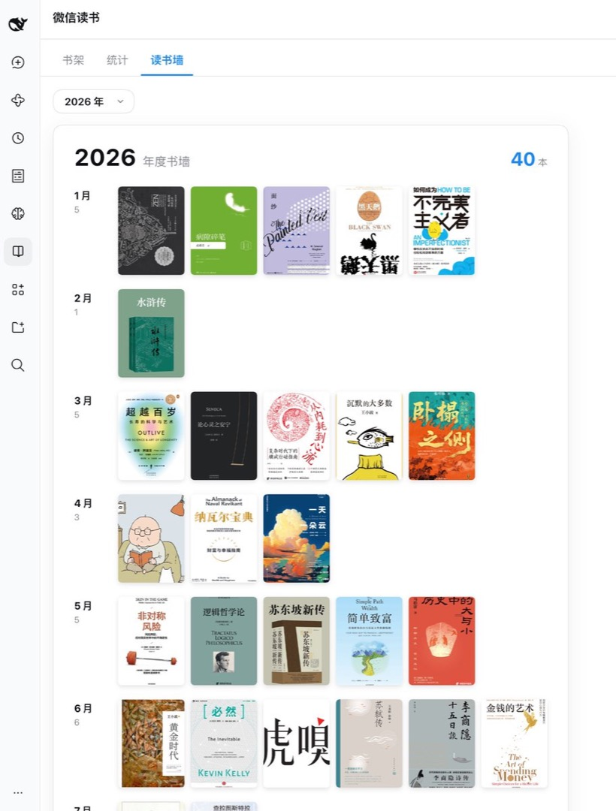
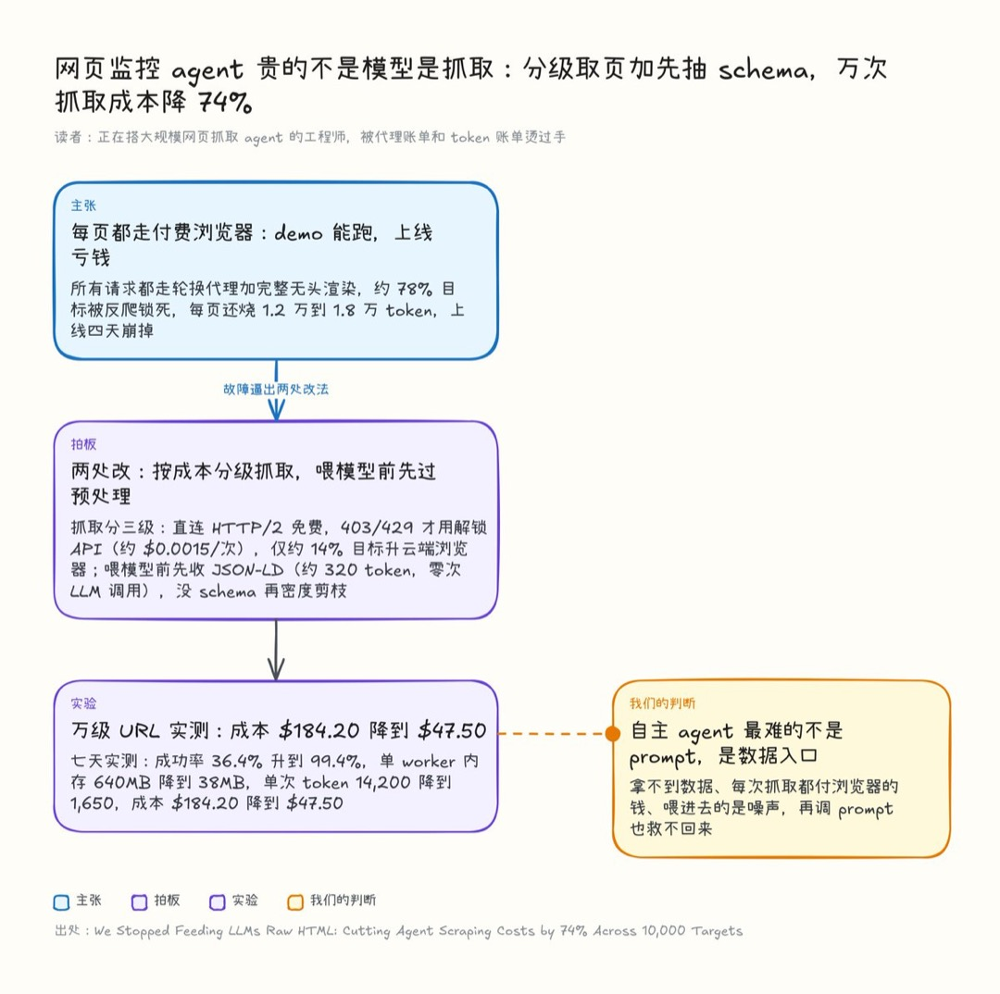
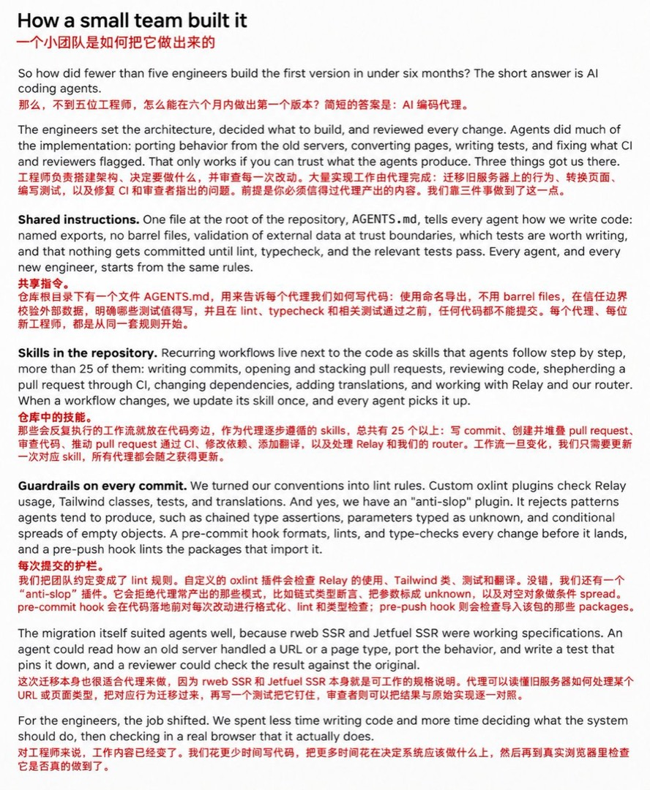
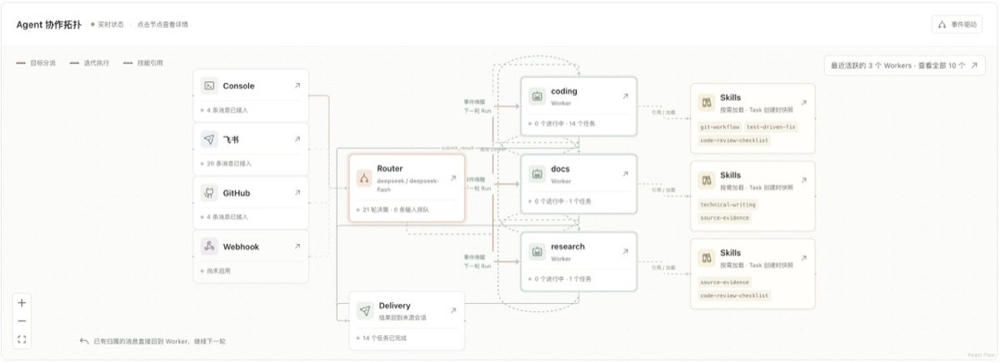

本期速览
01 反蒸馏使国产LLM差距拉至12月
02 dsh-weread插件打通微信读书
03 分层抓取方案使Agent成本降74%
04 X网页版重写首屏提速至2.7秒
06 xAI Data Bot周留存达70%
01｜反蒸馏使国产LLM差距拉至12月
来源（X） · @indigox · 2026-11-05 12:17
现在靠蒸馏，差距大约是 3–4 个月；反蒸馏生效后，会拉到约 12 个月；如果美国头部几家明年都是 RSI，差距还会再拉到 18–24 个月。到时数据配比、算力分配、开几条线都是「炼丹」，50 个研究员只能开 50 条线，RSI 之后训练线数只由算力决定 ...




02｜dsh-weread插件打通微信读书
来源（X） · @hank_zhao · 2026-11-05 10:30



03｜分层抓取方案使Agent成本降74%
来源（X） · @yibie · 2026-11-05 13:51
原来的做法是每个 URL 都走轮换住宅代理加本地无头浏览器完整渲染。结果约 78% 的站挂着 Cloudflare、DataDome 或 Akamai，浏览器在验证页上空转，全堵在 403；原始 HTML 每页烧 1.2 万到 1.8 万 token，模型付费读 cookie 弹窗和压缩 JS，偶尔还幻觉出不存在的价格。
经过以下两种改变就可以了：
抓取按成本分三级，上一级失败才升级。
0 级是带浏览器级指纹的直连 HTTP/2，零成本，文档站、RSS、老门户在这里就过。1 级是第三方解锁 API，约 0.0015 美元一次，只在遇到 403、429 或反爬响应头时触发。2 级是云端浏览器，只有约 14% 的目标真需要客户端渲染，图片、CSS、字体在网络层拦掉，单 worker 内存从 640MB 降到 38MB。
喂模型之前先清洗数据。
先读网页自带的 JSON-LD，约 320 token、零次模型调用，schema 有效就根本不调模型；没有 schema 再剥掉 script、svg、导航这些低密度节点，余下转成 Markdown 表格。一个 2.4MB 的电商页，有用数据通常不到 4KB。单次调用的 token 从 14,200 降到 1,650。
七天、一万个带反爬的 URL 实测：中位延迟 14.8 秒降到 2.6 秒。按这个差价，十万次日检查的老做法一天烧约 1,842 美元，而模型一次都还没被调用。
原文链接在评论区
#AIAgent #网页抓取 #LLM

04｜X网页版重写首屏提速至2.7秒
来源（X） · @Michaelzsguo · 2026-11-05 10:06
但最有意思的是他们怎么做出来的：5 人左右的小团队，借助 AI ，不到半年完成了第一版。
工程师定架构、决定做什么、审核每次改动；AI 承担大量迁移、页面转换、写测试和修复工作。配套的是一份统一的 AGENTS.md、25 多个可复用 skills，以及每次提交都会执行的自动检查，甚至专门写了个「anti-slop」插件，拦截 AI 常写出的糟糕代码。
旧系统则成了现成的规格说明：AI 对照旧行为迁移，人对照原版验收，再到真实浏览器里检查效果。

引用内容
Yagiz Nizipli @yagiznizipli
中文译文
网页重写正在起效。
在慢速网络下，旧版 X 网页显示个人资料上的第一条帖子需要超过 22 秒。新版 X 网页只需 2.7 秒。以下是我们如何做到的，以及我们如何逐个国家进行推出。
https://blog.x.com/en/engineering/rebuilding-the-global-town-square-from-scratch
原文
The web rewrite is working.
On a slow connection, the old X web took more than 22 seconds to show the first post on a profile. The new X web does it in 2.7 seconds. Here's how we did it, and how we're rolling it out one country at a time.
https://blog.x.com/en/engineering/rebuilding-the-global-town-square-from-scratch
05｜Anthropic增长岗加入OpenAI
来源（X） · @dotey · 2026-11-05 10:57
先说"增长"是做什么的。产品做出来以后，要有人负责让更多人知道它、来试用、并且一直用下去，具体包括投广告、让搜索引擎更容易搜到、优化注册流程、给新用户发使用引导邮件等。科技公司把做这类事的团队叫"增长团队"。
据营销平台 Passionfroot 2024 年 7 月对 Lau 的采访，他是 Anthropic 招的第一个增长岗位员工，任务是让更多人用上 Claude（Anthropic 的 AI 聊天助手）。在这之前，他在 Dropbox、Notion 等软件公司做增长营销。
Anthropic 今年 1 月专门发文介绍过他的工作方式。文章说，Lau 之前从没写过代码，用 Claude Code 给自己做了两个工具：
一个是设计软件 Figma 的插件，点一下就能批量生成多种版本的广告图；
另一个用来写谷歌搜索广告的文案，写完能直接导出可上传的文件。
文章说，原来做一条广告要 30 分钟，现在 30 秒。
Lau 在帖子里说，他在 Anthropic 参与搭建了增长团队，和很多很有才华的人共事，处理了职业生涯里最难的一些问题。
他还顺带比较了两家公司：Anthropic 的咖啡和饮料更好，OpenAI 的零食更好。
背景资料：
Anthropic 文章 https://claude.com/resources/articles/how-anthropic-uses-claude-marketing ；
Passionfroot 采访 https://www.passionfroot.me/blog/anthropics-austin-lau-on-building-your-growth-engine
引用内容
austin lau @helloitsaustin
中文译文
最近消息不断，所以如果有人在意的话，我也不妨夹带一下我自己的消息：我最近加入了 @OpenAI 🫡
我在 Anthropic 的时光如一场高烧般美妙。我有机会帮助搭建增长职能，与一些非常非常出色的人一起工作，并应对我职业生涯中一些最具挑战性的问题。
对这段经历无比感激，也对未来充满期待。另外，如果你好奇的话，Ant 的咖啡/饮品更好喝，而 OAI 的零食更好吃。
原文
lots of news breaking these days so I may as well sneak mine in if anyone cares and share that I recently joined @OpenAI 🫡
my time at Anthropic was a fever dream in the best way possible. got to help build the growth function, work alongside some really really talented people, and tackle some of the most challenging problems of my career.
incredibly grateful for the experience and excited for what’s ahead. also in case you were wondering, Ant has better coffee/drinks and OAI has better snacks.
06｜xAI Data Bot周留存达70%
来源（X） · @grapeot · 2026-11-05 12:06
一个是直接扔给全公司自己弄。xAI 和 SpaceXSI 内部一度长出了大约 280 个团队和个人助手，财务、营销、产品各自对着底层表调提示词，最后连哪些表能信、核心指标怎么算都对不上，算出来的数据没人敢直接拿去开会。
另一端是把能力收归底层平台组统建。工程团队花几个月搭了个带独立登录页的智能问数门户，它不懂业务日常习惯的口径，又逼着大家跳出聊天窗口，上线两周没人打开。
那到底哪些工具应该由各组自行搭建，哪些应该由平台组来负责？SpaceXSI的数据科学团队公开了一个内部数据助手 Data Bot，给了我们一个很好的例子。在整个公司280个内部助手里面，只有12个实现了高覆盖、高粘性，排名第一的就是Data Bot，拿下了约70%的周留存。
他们没有在全员各自调教和平台大包大揽中间二选一，而是拆出了三层分工：
1. 领域专家组集中托管高频公共能力：数据科学团队把散装问数收拢成一个全公司共用的 Data Bot，内置四套共享技能（核心指标与排查顺序、A/B 实验全流程、可视化与看板规范、数据工程与埋点）。比如遇到指标异常下跌，它会按规定先查全球节假日日历和埋点变更，再归因到产品改动。
2. 底层平台组只管隐私隔离与署名审批：员工和助手的对话默认私密，连管理员也看不到别人的聊天记录；而日常对话里沉淀下来的新口径，则会生成带触发人署名的待审卡片（To review），必须由管理员点击 Approve 才能进入全公司共享记忆。
3. 业务团队直接在 Slack 群聊里消费：高留存助手有 60% 的消息发生在群聊里，低留存助手只有 12%。同事在群里让 Data Bot 拉最近三个月转化数据做进幻灯片，Data Bot 甚至会在同一个群聊线程里自己艾特品牌设计助手要配色和字号规范，两个助手当场接力把活干完。
现在搭建一个 AI 助手只需要几分钟，真正稀缺的就不再是把机器人跑起来的能力，而是谁来替全公司守住那套可信的业务口径。
全文链接：
https://yage.ai/share/xai-data-bot-team-boundaries-20261104.html?utm_source=twitter&utm_medium=thread&utm_campaign=xai-data-bot-team-boundaries-20261104
07｜OpenSuperAgent可自部署开源
来源（X） · @akgongchao · 2026-11-04 18:43
https://github.com/thefullgc/opensuperagent
希望它能接住日常工作里的消息，记住任务的来龙去脉，并行把事情往前推。你提出需求、补充方向，在需要时查看进展、验收结果。
项目还在早期，欢迎一起探索完善改进哇.
npm install -g opensuperagent
opensuperagent init
opensuperagent serve

08｜OpenAI未来两周持续更新App
来源（X） · @JacksAISites · 2026-11-04 23:20
10 月 29 日，Codex 和 ChatGPT 团队的 Andrew Ambrosino (这位现在开始负责 OpenAI 与用户的反馈）发了两件事
用量限制恢复翻倍，他说是大家的反馈起了作用.
当天开始一轮冲刺，专门把 App 做得更简单、更快，他亲自盯
最后一句是 now, send me your complaints.
结果那条收了 4076 条回复，244 万浏览，评论区基本成了吐槽大会.
今天他出来交代进度，说进展很好，接下来会持续上线，有些更新会攒成一批，在未来一两周里发出来.
所以这一两周里 App 会不断有变化，不是等到某一天一口气全改完.
你吐槽过什么？最想他们先修哪一个？
引用内容
Andrew Ambrosino @ajambrosino
中文译文
大家好，我们在这方面进展非常顺利。接下来一两周内我们会持续推出，并批量发布一些更新。
原文
hi team, we are making very good progress on this. will be rolling things out continuously and batching some updates over the next week or two